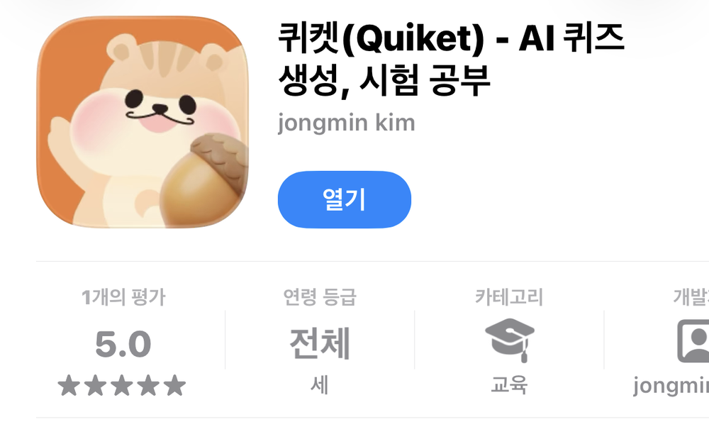
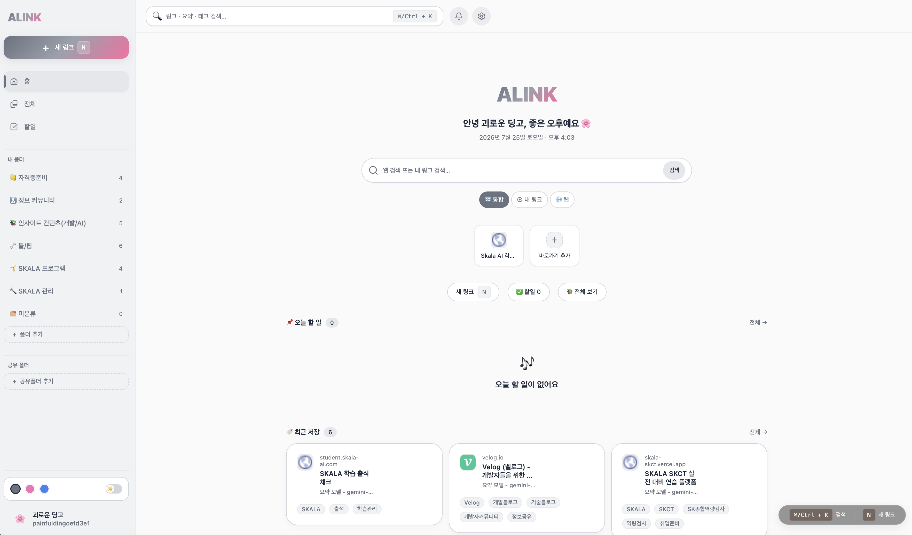

함께 만든 프로젝트
Team
01 · Team · 7인
퀴켓 — 퀴즈 학습 앱
직접 만든 문제로 공부하는 모바일 앱입니다. 일곱 명이 넉 달간 만들어 스토어에 올렸습니다.

내가 한 일
- 사용자 인터뷰 12건을 진행해 문제 정의를 다시 씀
- 화면 흐름과 기능 명세 작성, 개발자 4명과 스프린트 운영
- 스토어 심사 대응 및 출시 후 지표 확인
배운 것
기능을 줄이는 결정이 늘리는 결정보다 어렵다는 걸 알았습니다.
- 기획
- 사용자 조사
- 스토어 출시
02 · Team · 진행 중
급여명세서 작성 자동화 서비스
취득신고와 급여명세서 작성을 자동화하는 서비스를 설계했습니다. 계산 로직부터 유저·어드민 플로우까지 함께 정리했습니다.
내가 한 일
- 급여·공제 계산 로직 정의 — 예외 케이스까지 규칙으로 문서화
- 유저/어드민 화면 흐름과 UI·UX 설계
- 취득신고 자동화 프로세스 설계
배운 것
계산이 얽힌 서비스는 예외 케이스 정의가 곧 기획의 절반입니다.
- 서비스 기획
- 계산 로직
- UI·UX
03 · Team · 2인
에이링크 — AI 링크·QR 북마크
링크와 QR코드를 한곳에 모으는 북마크 서비스입니다. 웹과 앱을 통합했고, 포털 검색도 한 화면에서 해결합니다.

주요 기능
- 링크를 추가하면 AI가 폴더 분류·링크명·설명·태그를 자동 생성
- 웹/앱 통합 북마크 + 포털 검색 기능 내장
- 링크에 할 일과 알림을 붙여 기록 관리
배운 것
QA를 진행하면서 AI가 링크에 접근하지 못하는(로그인·차단) 경우가 생각보다 꽤 많다는 것을 알게 됐습니다.
- AI 분류
- 웹·앱 통합
- 북마크
혼자 시작한 프로젝트
Personal
Projects
01 · Solo
Inwoo.log — 개인 기록 사이트
지금 보고 계신 사이트입니다. 순수 HTML, CSS, JavaScript만으로 만들었습니다.
만들면서 정한 것
- 색은 CSS 변수로만 관리하고 하드코딩하지 않기
- 사진이 없어도 읽히는 구조로 먼저 만들기
- 키보드만으로 모든 기능을 쓸 수 있게 하기
배운 것
프레임워크 없이 만들어보니 브라우저가 원래 해주던 일이 보였습니다.
- HTML
- CSS
- JavaScript
02 · Solo
마켓데스크 — AI 리포트 분석·종목 관리
산업·기업 리포트와 경제뉴스를 내 목적(취업·투자 렌즈)에 맞춰 AI가 구조화 요약하고, 일·월 흐름으로 누적해 보여주는 개인화 도구입니다. 종목 추적·모의투자까지 붙였습니다.
주요 기능
- 렌즈별(취업 직무 15종 · 투자) AI 요약 — 출처 인용, 없는 숫자는 생성 금지
- 산업·문서 타입 AI 자동 매칭 + 산업별 대시보드, 일·월 흐름 롤업
- 내 종목 — KIS 실시간 시세, 모의투자 시뮬레이션, 매매 다이어리, 가격 경보
- 형광펜 하이라이트·단어 풀이, PDF·Markdown 내보내기
- 분석 엔진 선택 — Gemini·Claude·GPT(BYO 키) 또는 로컬 Ollama
신경 쓴 것
투자 추천이 아니라 정보·기록 도구로 선을 긋고(목표주가·매수의견 생성 금지, 면책 노출), 요약은 원문 근거만 쓰도록 가드레일을 설계했습니다.
- AI 리포트 요약
- KIS 시세 API
- 주식 시뮬레이션
- 멀티 LLM(BYO)
- 대시보드
03 · Solo
관계부 — 인맥·관계 기록 & AI 분석
소중한 관계를 놓치지 않도록, 사람마다 필요한 걸 한 곳에 기록하는 앱입니다. 카톡 대화를 올리면 AI가 날짜별로 요약하고, 종합해 관계 건강도까지 분석합니다.
주요 기능
- 인물 카드 — MBTI·인스타 아이디·명함·못 먹는 음식 등 자유 메모
- 경조사비·빌려준/빌린 돈 기록 — 주고받은 잔액 자동 계산
- 카톡 대화 캡처를 올리면 AI가 날짜별 대화 요약
- AI 관계 건강도 분석 — 소원해진 사람·챙길 사람·정리할 관계 추천
- 연락 리마인더 · 경조사 D-day 알림
스택
- Next.js 15
- Supabase
- Capacitor
- Claude API
- Gemini API Live
04 · Solo · AI Agent
일간 메일 요약 에이전트
Gmail을 매일 아침 자동으로 읽어 중요도별로 요약한 뒤 Discord 채널로 보내주는 에이전트입니다.
동작 방식
- 매일 아침 Gmail 자동 수집 (IMAP)
- Claude Sonnet으로 중요도별 요약 생성
- Discord 채널로 전송 · GitHub Actions로 자동 실행
스택
- Python
- Gmail IMAP
- Claude Sonnet
- Discord Bot
- GitHub Actions
05 · Solo
템플릿 허브 — 오픈소스 모음·확장
PPT·보고서·자소서 템플릿과 오픈소스를 한곳에 모아두고, 그 위에 직접 기능을 덧붙여 개발하는 데스크탑 허브입니다.
이렇게 씁니다
- PPT · 보고서 · 자소서 등 카테고리별 템플릿·오픈소스를 한곳에 정리
- 필요한 기능은 그 위에 직접 붙여서 확장
- 앞으로 더 많은 템플릿을 계속 더해갈 계획
특징
- 오픈소스 큐레이션
- 직접 확장
- 데스크탑